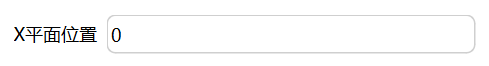

物体基于目标坐标系平面（如XOY、YOZ、XOZ平面），支持修改坐标系平面的位置对齐物体。用于调整对象的方向或位置，使其与特定坐标平面对齐。

步骤：在选体模式下，选中目标体，点击主菜单栏“建模”->“形状”->“转换”->“与YOZ平面对齐”。修改YOZ平面位置，此处是基于世界坐标系下的平面位置，点击“完成”可以看到物体移与YOZ平面对齐并移动到目标平面的位置。
步骤：在选体模式下，选中目标体，点击主菜单栏“建模”->“形状”->“转换”->“与XOZ平面对齐”。修改XOZ平面位置，此处是基于世界坐标系下的平面位置，点击“完成”可以看到物体移与XOZ平面对齐并移动到目标平面的位置。
步骤：在选体模式下，选中目标体，点击主菜单栏“建模”->“形状”->“转换”->“与XOY平面对齐”。修改XOY平面位置，此处是基于世界坐标系下的平面位置，点击“完成”可以看到物体移与XOY平面对齐并移动到目标平面的位置。